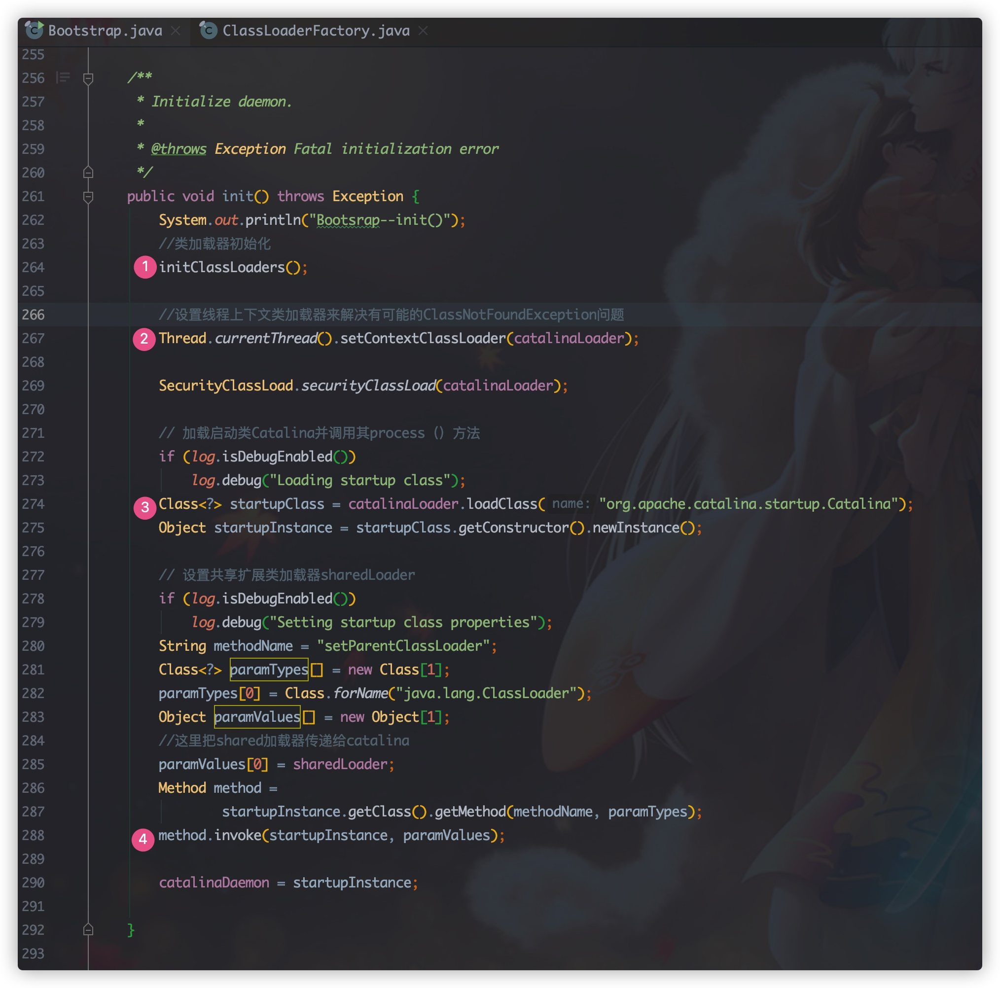
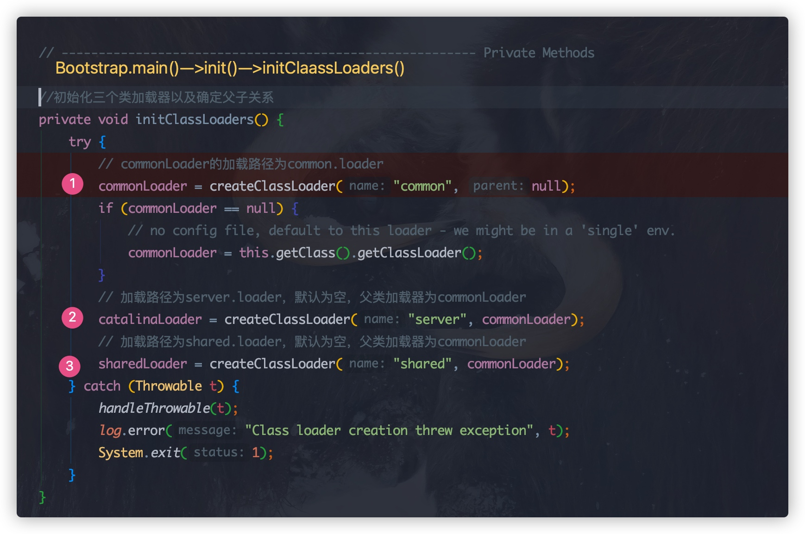

我们知道 Tomcat 上可以部署多个项目，那么这是会遇到什么样的问题呢？
Tomcat 运行时需要加载哪些类
Tomcat中的多个项目可能存在相同的类
Tomcat中类加载的顺序
这里关于 JVM 的类加载器以及双亲委派机制可以查看这篇文章五、java虚拟机执行子系统---类加载机制
Tomcat 类加载解决方案
在 Tomcat 的类加载过程中需要注意一下几个方面
隔离性
灵活性
性能
Tomcat 中的类加载器
Tomcat 提供了3个基础类加载器(common、catalina、shared)和web应用类加载器。tomcat 的类加载关系结构图如下图所示：
Tomcat 类加载器
三种基础的类加载器
它们的加载路径在 catalina.properties 文件中配置，默认情况下，3 个基础类加载器的实例都是一个。
initClassLoader方法
createClassLoader方法
默认情况三个是一个实例，但是可以通过修改配置创建 3 个不同的类加载机制，使它们各司其职。
举个例子：如果我们不想实现自己的会话存储方案，并且这个方案依赖了一些第三方包，我们不希望这些包对 Web 应用可见，因此我们可以配置 server.loader,创建独立的 Catalina 类加载器。
共享性： Tomcat 通过 Common 类加载器实现了 Jar 包在应用服务器与 Web 应用之间的共享， 通过 Shared 类加载器实现了 Jar 包在 Web 应用之间的共享 通过 Catalina 类加载器加载服务器依赖的类。
在 createClasssLoader方法中我们看到 最终使用ClassLoaderFactory工厂创建了类加载器
ClassLoadFactory 有一个内部 Repository， 它就是表示资源的类，资源的类型用一个 RepositoryType 的枚举表示。
同时我们看到，如果在检查 jar 包的时候，如果有检查的 URL 地址的如果检查有异常就忽略掉，可以确保部分类加载正确。
WebApp 类加载器
每个 Web 应用会对应一个 Context 节点，在 JVM中就会对应一个 StandardContext对象，每个StandardContext对象内部都有一个加载器实例 loader（这个 loader实际上就是 WebappLoader 对象）, 每个loader 内部关联一个 classLoader 变量(webappClassLoader类加载器对象)
热加载分析
当配置信息中有 reloadable 的属性，并且值为 true 时，Tomcat 怎么去完成这个过程呢？